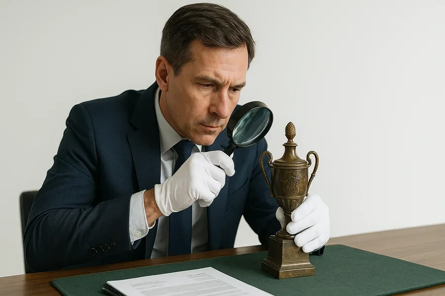
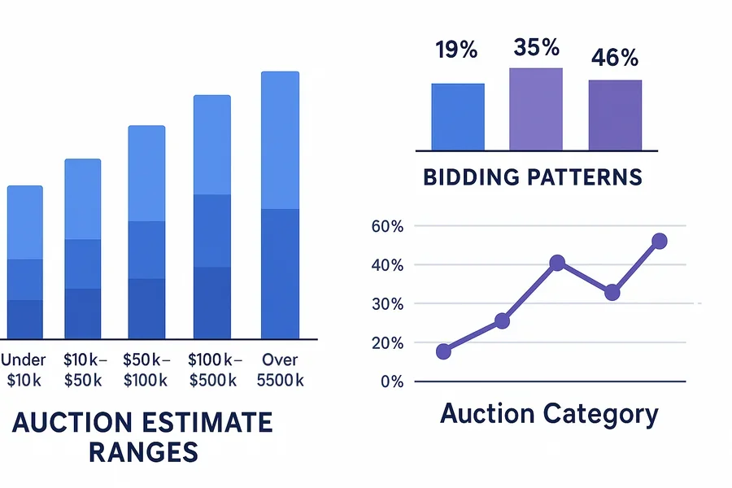

Running a successful auction house requires more than just acquiring great pieces—it demands strategic thinking about every aspect of your operation. From the moment you evaluate a potential consignment to the final hammer fall, each decision impacts your bottom line.
In this comprehensive guide, we'll explore ten proven strategies that leading auction houses use to maximize their revenue while building stronger relationships with both consignors and bidders.
1. Strategic Consignment Selection
Not every collection that walks through your door deserves a spot in your auction. The most profitable auction houses are selective about their consignments, focusing on pieces that will generate competitive bidding and strong margins.
Key Evaluation Criteria:
- Market demand: Is there an active collector base for this category?
- Condition and authenticity: Can you guarantee provenance and condition?
- Estimate potential: Will this piece likely exceed its low estimate?
- Marketing appeal: Does this item have a compelling story for your catalog?
"We've learned that saying 'no' to mediocre consignments allows us to focus our marketing efforts on pieces that truly excite collectors." - Leading European Auction House
2. Optimize Your Catalog Presentation
Your catalog is your primary sales tool. Professional photography, compelling descriptions, and strategic lot sequencing can dramatically impact final results.
Catalog Best Practices:
- Invest in high-quality photography that shows fine details
- Write descriptions that tell the story behind each piece
- Include condition reports that build bidder confidence
- Sequence lots to maintain energy throughout the sale
- Use appropriate estimates that encourage bidding
3. Master the Art of Estimate Setting
Estimates serve a dual purpose: they attract bidders and establish market expectations. Getting them right is crucial for maximizing revenue.
The Sweet Spot Strategy: Set low estimates that draw interest while allowing room for competitive bidding to drive final prices well above the estimate range.
4. Build a Targeted Marketing Campaign
Generic marketing doesn't work in the collectibles world. Successful auction houses segment their audiences and create targeted campaigns for different collecting specialties.
Effective Marketing Channels:
- Email marketing: Segmented lists based on collecting interests
- Social media: Visual platforms showcasing high-quality images
- Collector publications: Targeted ads in specialty magazines
- Direct outreach: Personal contact with known collectors
- Preview events: Exclusive viewings for VIP clients
5. Leverage Technology for Broader Reach
Modern auction houses can't compete without embracing technology. Online bidding platforms, mobile apps, and live streaming expand your bidder pool far beyond your physical location.
Studies show that auctions with strong online participation achieve 15-25% higher average lot prices compared to room-only sales.
6. Create Bidding Competition
The highest revenues come from competitive bidding situations. Smart auctioneers orchestrate their sales to maximize these opportunities.
Competition-Building Techniques:
- Identify and market to known competitors in specific categories
- Use lot groupings that create "must-have" situations
- Time your auctions to avoid competing with major sales
- Build suspense with strategic lot placement
- Encourage phone and online bidding to expand participation
7. Implement Dynamic Reserve Strategies
Reserves protect consignors but can also limit bidding excitement. The most successful auction houses use dynamic reserve strategies that maximize revenue while maintaining consignor confidence.
"We've found that transparent reserve policies actually encourage more aggressive bidding because bidders know exactly what they need to achieve." - Specialist Auction House Director
8. Optimize Your Fee Structure
Your fee structure directly impacts your revenue. Review and optimize both buyer's premiums and seller's commissions regularly to ensure competitive positioning while maximizing profitability.
Fee Optimization Strategies:
- Tiered premium structures that reward larger purchases
- Early payment discounts to improve cash flow
- Competitive commission rates for high-value consignments
- Additional service fees for special handling or shipping
9. Focus on Post-Sale Excellence
Revenue maximization doesn't end when the hammer falls. Efficient post-sale processing, prompt invoicing, and excellent customer service ensure smooth transactions and encourage repeat participation.
Post-Sale Best Practices:
- Send invoices within 24 hours of sale completion
- Offer multiple payment options for buyer convenience
- Provide secure, professional packaging and shipping
- Follow up with both buyers and consignors
- Resolve any issues quickly and professionally
10. Analyze and Optimize Performance
The most successful auction houses continuously analyze their performance and make data-driven improvements to their strategies.
Key Metrics to Track:
- Sell-through rates: Percentage of lots that achieve sales
- Estimate performance: How often lots exceed estimates
- Bidder participation: Online vs. room bidding patterns
- Category performance: Which specialties generate the highest returns
- Marketing ROI: Which channels drive the most valuable bidders
Conclusion: Building Sustainable Revenue Growth
Maximizing auction revenue requires a holistic approach that touches every aspect of your operation. From strategic consignment selection to post-sale follow-up, each element contributes to your overall success.
The auction houses that thrive in today's competitive market are those that embrace both traditional auction expertise and modern technology. By implementing these ten strategies systematically, you'll build a foundation for sustainable revenue growth while strengthening relationships with consignors and bidders alike.
Remember: Revenue maximization is a long-term strategy, not a short-term tactic. Focus on building trust, delivering value, and continuously improving your processes. The results will follow.